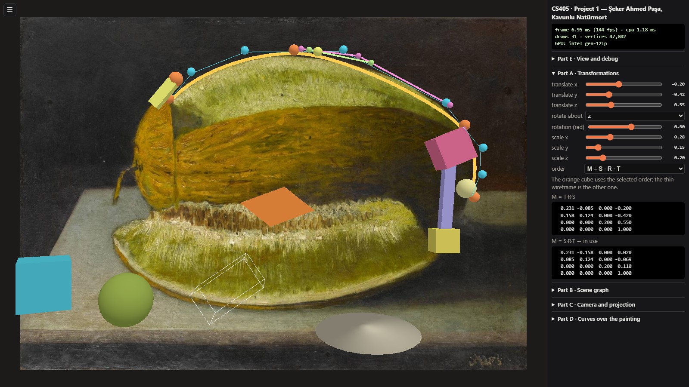
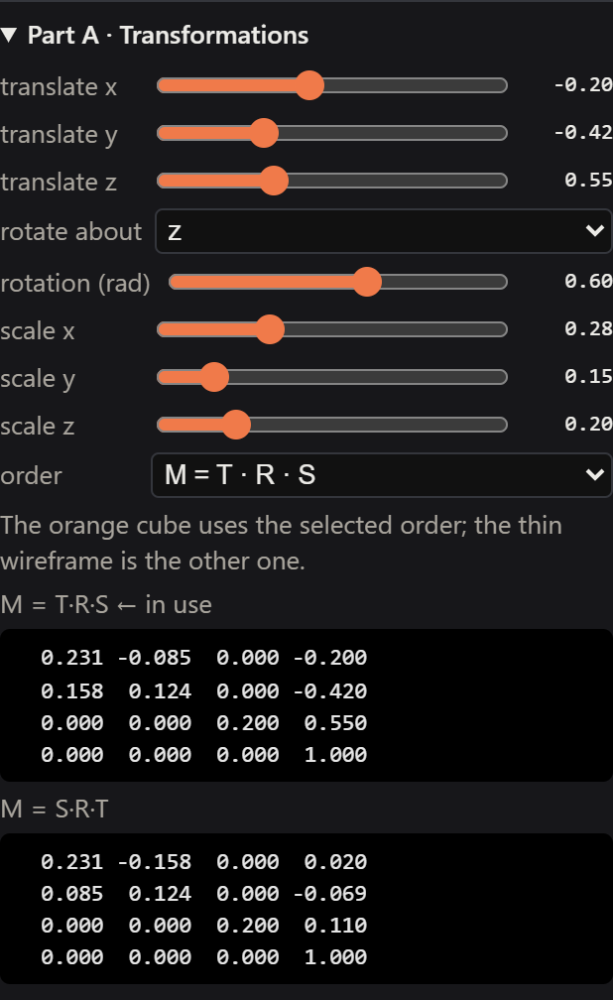
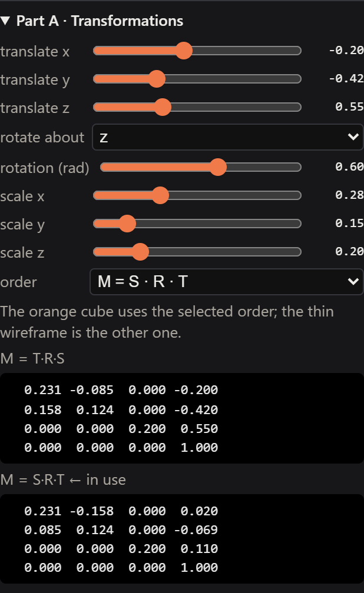
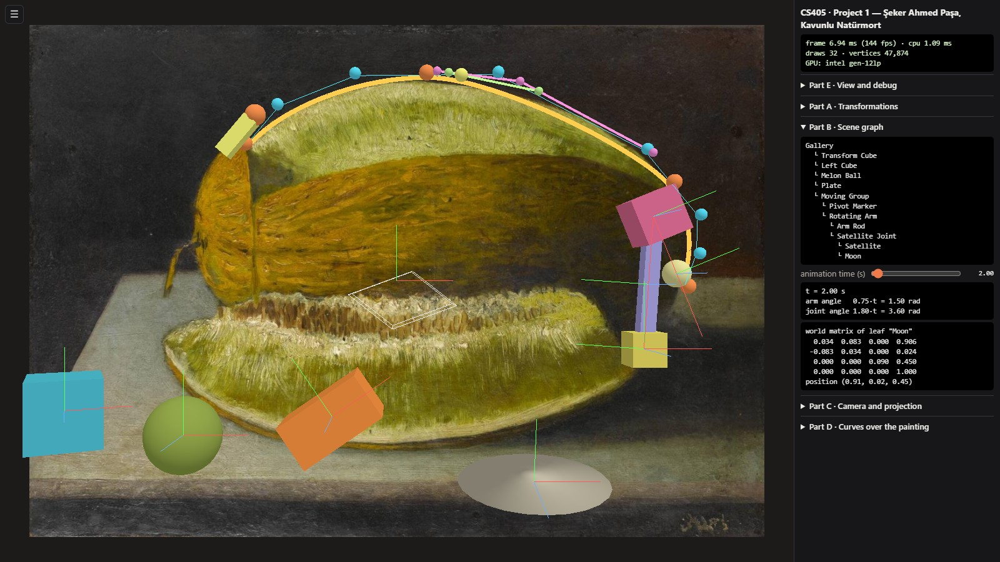
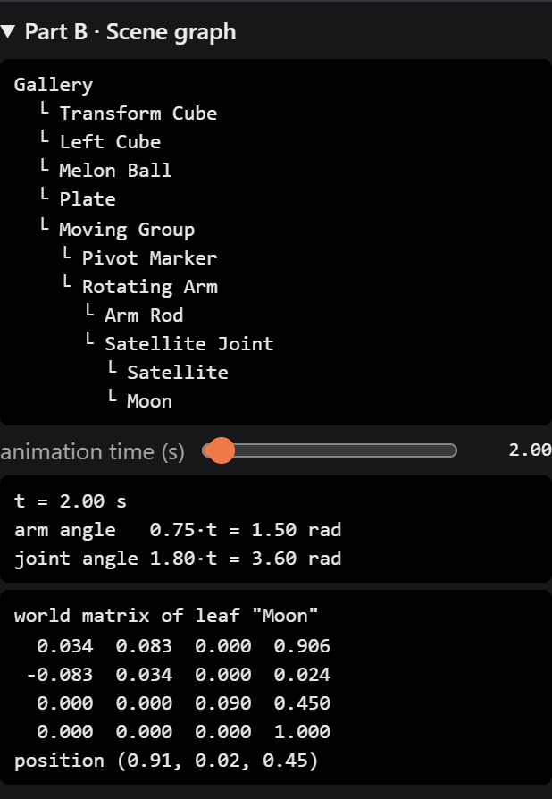
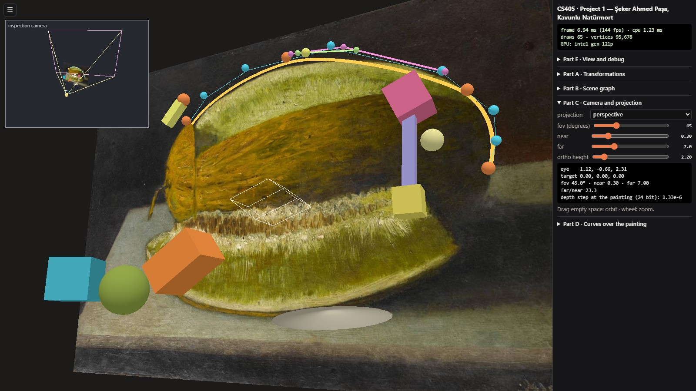
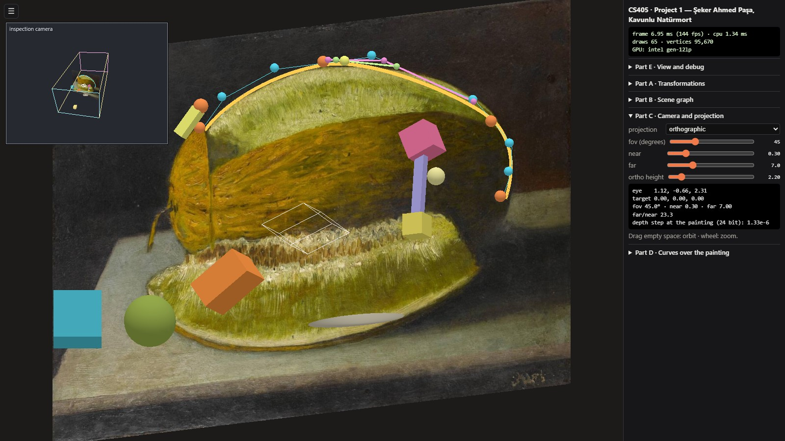
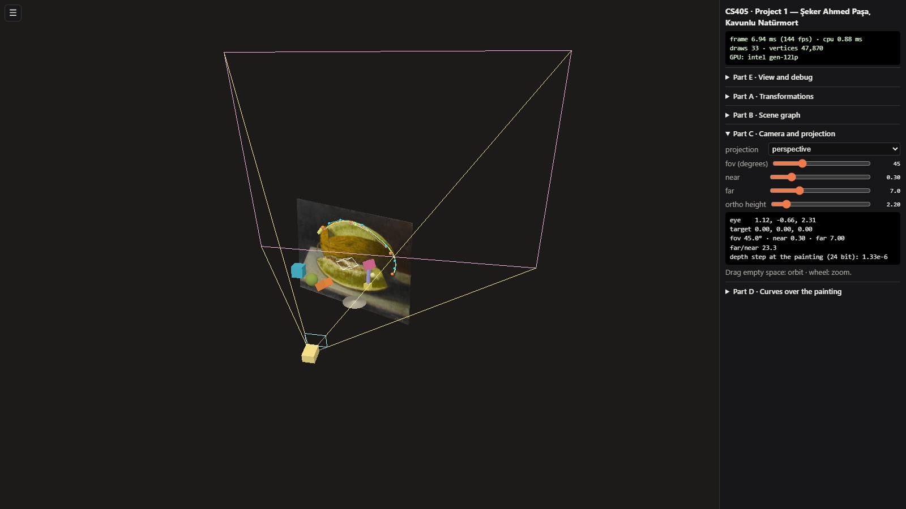
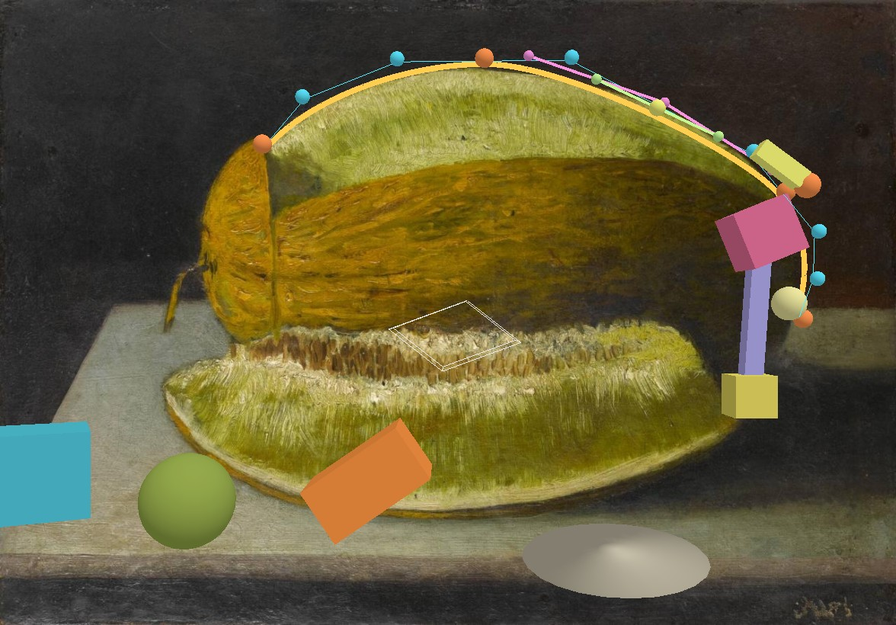
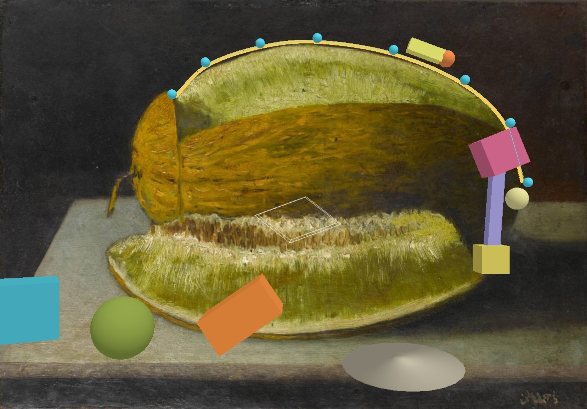

project1-finalŞeker Ahmed Paşa — Kavunlu Natürmort (Sakıp Sabancı Museum collection), image 1280 × 893 px, aspect a = 1.433.
I chose it for its organic contours: the upper outline of the melon is one smooth arc that three cubic Bézier segments can follow closely (Part D),
and the grey table in the lower third gives the objects of Parts A and B a believable place to stand. The painting is the textured quad
x ∈ [−a, a], y ∈ [−1, 1] in the plane z = 0; everything else lives at z > 0. Parts A–D are one scene in one page; the
Part E panel switches views, resets, toggles the debug drawings, and the box above it shows frame time and the vertices submitted per frame.
The conventions used everywhere: column vectors (p′ = M·p, rightmost factor first), column-major Float32Array(16) uploaded unchanged,
right-handed axes, camera looking down −z, depth z ∈ [0, 1], and M = T·R·S for every local transform.
88 unit tests (npm test) check the matrices, curves, scene graph, frustum and picking against independent reference calculations.
The matrix library (src/math/mat4.js) implements identity, multiply, translate, rotate about x/y/z, scale, transpose and the inverse of a rigid
transform (rotation transposed, translation −Rᵀt); the last one builds the camera-to-world matrix that places the camera model in the inspection view.
Four objects stand in front of the painting, all placed with T·R·S: the cyan cube, the green sphere, the plate, and the orange cube, which is
driven by the sliders (translation x/y/z, rotation angle about x, y or z, scale x/y/z) and the order switch. Both matrices are printed on screen.



Why the orders differ. With column vectors the rightmost matrix acts first. T·R·S scales the object about its own origin, rotates it about that origin and only then translates it, so the translation (-0.2, -0.42, 0.55) stays untouched in the last column and the cube is exactly where the sliders put it. S·R·T translates first and then rotates and scales the translated point about the world origin: the translation is itself rotated by Rz(0.6) and scaled component-wise, giving (0.020, -0.069, 0.110) in the last column; and because the non-uniform S = (0.28, 0.15, 0.2) acts after R, edges that were perpendicular are no longer perpendicular (shear). All other code uses T·R·S: a local matrix then reads "size, then orientation, then position", a child can be positioned relative to its parent's origin, and world = parent.world · local composes naturally down the tree.
SceneNode.updateWorld).
World matrix of the leaf Moon, by hand. Moving Group T(0.80, −0.22, 0.45); Rotating Arm Rz(0.75 t); Satellite Joint T(0.43, 0, 0)·Rz(1.8 t); Moon T(0.20, 0, 0)·S(0.09). Hence W = T(0.80, −0.22, 0.45) · Rz(θa) · T(0.43, 0, 0) · Rz(θj) · T(0.20, 0, 0) · S(0.09). Using Rz(α)·T(d, 0, 0) = T(d cos α, d sin α, 0)·Rz(α) and adding the z-rotations, W = T(0.80 + 0.43 cos θa + 0.20 cos(θa+θj), −0.22 + 0.43 sin θa + 0.20 sin(θa+θj), 0.45) · Rz(θa+θj) · S(0.09). At t = 2 s: θa = 1.50, θj = 3.60, θa+θj = 5.10 rad, so the position is (0.830 + 0.076, 0.209 − 0.185, 0.450) = (0.906, 0.024, 0.450) and the upper-left block is 0.09·[cos 5.10, −sin 5.10; sin 5.10, cos 5.10] = [0.034, 0.083; -0.083, 0.034] with 0.090 in the (3,3) entry. The application prints (0.906, 0.024, 0.450) and the same block (panel below), agreeing to the 3 printed digits (largest difference 4.9e-8; a unit test repeats the comparison at several times).

| 0.034 | 0.083 | 0.000 | 0.906 |
| -0.083 | 0.034 | 0.000 | 0.024 |
| 0.000 | 0.000 | 0.090 | 0.450 |
| 0.000 | 0.000 | 0.000 | 1.000 |
View matrix. With the eye e, target c, up u₀: forward f = (c−e)/|c−e|, back b = −f; first cross product r = normalise(u₀×b) (camera x); second cross product u = b×r (camera y). The rows of the rotation are r, u, b (they are orthonormal, so the inverse rotation is the transpose), and the translation moves the eye to the origin:
If u₀ is parallel to b the first cross product is zero; lookAt then replaces u₀ by (0,1,0) (or (1,0,0) when b is almost vertical) so the matrix stays finite; the orbit controller also keeps the polar angle in [0.08, π−0.08].
Perspective (f = 1/tan(fovY/2), view-space z < 0, wclip = −z): xclip = (f/a)x, yclip = f y, zclip = A z + B. Requiring
zndc = (A z + B)/(−z) to be 0 at z = −n and 1 at z = −F gives A = F/(n−F), B = nF/(n−F);
check: at z = −n: (−nF/(n−F) + nF/(n−F))/n = 0; at z = −F: (−F²+nF)/((n−F)F) = 1.
(OpenGL's [−1, 1] convention would use different A, B; WebGPU needs [0, 1].) Orthographic: zndc = (z + n)/(n − F), which is 0 at −n and 1 at −F with w = 1. Both are tested against the frustum corners, which must land on x, y = ±1 and z = 0 / 1.



Near / far. I use near = 0.3, far = 7. The nearest geometry at the closest zoom (radius 1.2, objects at z ≤ 0.55) is 0.65 away, and the zoom limit (6) is below far, so nothing is clipped while orbiting. Depth resolution of a 24-bit buffer at distance d: Δd ≈ 2⁻²⁴ d² (F−n)/(F n), shown live in the panel. At d = 2.8:
| near | far | far/near | Δd | |
|---|---|---|---|---|
| 0.3 | 7 | 23.3 | 1.49e-6 | chosen |
| 0.1 | 8 | 80.0 | 4.61e-6 | first version of this project |
| 0.01 | 100 | 10000.0 | 4.67e-5 | tiny near, huge far |
| 1.5 | 4 | 2.7 | 1.95e-7 | tight, clips close objects |
The painting, the curve ribbon (0.04 above) and the control points (0.10 above) are ≥ 0.04 apart, far above Δd, so there is no z-fighting. A tiny near plane makes Δd 30× worse.


Start and end points. B(t) = Σi Bi(t) Pi. At t = 0: B0 = 1 and B1 = B2 = B3 = 0 (each of the latter has a factor t), so B(0) = P0.
At t = 1: B0 = B1 = B2 = 0 (each has a factor 1−t) and B3 = 1, so B(1) = P3. The basis is non-negative and sums to 1 (binomial theorem for ((1−t)+t)³), so the curve stays in the convex hull.
Derivative: B′(t) = 3[(1−t)²(P1−P0) + 2(1−t)t(P2−P1) + t²(P3−P2)], so B′(0) = 3(P1−P0) and B′(1) = 3(P3−P2).
C¹ at a joint Q = P3(k) = P0(k+1) (segments of equal duration): 3(Q−P2(k)) = 3(P1(k+1)−Q), i.e. P1(k+1) = 2Q − P2(k):
the two handles are mirror images through the joint. The editor enforces it: dragging a handle moves its partner to the mirror point, dragging a knot carries both handles along (Trace.move), and the tests check that the tangents on both sides of every joint stay equal after dragging handles and knots.
Second family. Catmull–Rom passes through every control point with tangent (pi+1−pi−1)/2 (the end points use a reflected phantom neighbour); the uniform cubic B-spline uses the basis
[(1−t)³, 3t³−6t²+4, −3t³+3t²+3t+1, t³]/6 and is C² but only approximates its control polygon. The default B-spline control points are solved so that the curve passes through the same outline.
Tracing and animation. The starting points were read off the painting (knots at (0.30, 0.24), (0.54, 0.11), (0.86, 0.31), (0.88, 0.51) in normalised image coordinates, handles from the local slope of the rind), and every point can be dragged in the plane of the painting
(the pointer ray is intersected with the plane of the control points). The box moves with the curve parameter and its heading is atan2(−dv, a·du) — the aspect factor a is needed because the painting plane stretches u by 2a and v by 2.
The exported JSON (appendix) stores the control points in normalised coordinates (u right, v down).
One page, one render loop: src/math (vectors, matrices, curves), src/scene (nodes, gallery, camera, orbit, traced curve), src/render (device, renderer, pipelines, WGSL, thick-curve ribbons), src/ui (panel, controls, stats).
Views: orbit camera (mouse), fixed inspection camera, and an inspection inset drawn in a second render pass with its own viewport (so the same frame draws the scene twice; every draw gets its own slot of a dynamic-offset uniform buffer). Reset (button / R), pause (Space), switch view (V) and the five debug toggles are in the Part E panel.
Measured on Intel UHD Graphics (WebGPU adapter: vendor intel, architecture gen-12lp), driver 32.0.101.7088 (the machine also has an NVIDIA GeForce RTX 5050 Laptop GPU, but the browser's WebGPU adapter on Windows was the Intel one), Microsoft Edge 156, Windows 11, 1600 × 900 window (canvas about 1270 × 900), display 144 Hz. Each figure is the mean of the application's own smoothed frame-time readout sampled for 6 s after 1.5 s of warm-up;
"uncapped" runs Edge with --disable-gpu-vsync --disable-frame-rate-limit.
| Configuration | draws | vertices / frame | frame, vsync | CPU / frame | frame, uncapped | CPU / frame |
|---|---|---|---|---|---|---|
| orbit view, inspection inset on (default) | 65 | 95,678 | 7.02 ms (143 fps) | 1.67 ms | 2.32 ms (435 fps) | 1.19 ms |
| orbit view, inset off | 31 | 47,802 | 7.10 ms (141 fps) | 1.33 ms | 1.98 ms (510 fps) | 1.09 ms |
| orbit view, inset on, node axes on | 67 | 95,822 | 7.11 ms (141 fps) | 1.79 ms | 2.38 ms (424 fps) | 1.39 ms |
| inspection camera, full view | 33 | 47,870 | 7.00 ms (143 fps) | 1.65 ms | 1.33 ms (778 fps) | 0.83 ms |
With vsync on, all four configurations stay between 7.00 and 7.11 ms (141–143 fps), i.e. at the display's 144 Hz refresh (6.94 ms), so the scene has a large reserve. Uncapped, the inspection inset (a second pass: draws 31 → 65, vertices 47.8 k → 95.7 k) adds 0.35 ms (17 %); node axes add two draws and 0.05 ms. The JavaScript side needs about 0.8–1.4 ms per frame, below the frame time, so the frame is limited by the GPU, not by the CPU. The full-screen inspection view is the cheapest (1.33 ms) although it draws the same scene once: the painting covers only a small part of the canvas there, which suggests that pixel fill (the painting quad and the overlapping meshes) is the main cost. Absolute numbers move with the GPU's clock state: an earlier run of the same script gave 1.29, 1.11, 1.32 and 0.76 ms for the four rows, with the same ordering.
multiply, so a three- or four-factor product silently dropped its last factors (the scale) and drew a unit cube. A screenshot showed it; printing the product showed a missing S. The helper is now a left fold over any number of matrices, and the gallery test compares the Moon's world matrix with an independent reference product.width: auto; the resize observer fed the canvas's own pixel size back into its CSS size. Logging canvas.width showed the feedback loop; explicit CSS sizes fixed it.curve-kavunlu.json){
"painting": "kavunlu",
"kind": "bezier-c1",
"coordinates": "normalised (u right, v down, origin at the top-left of the image)",
"segments": [
[
[0.3008, 0.2408],
[0.3438, 0.168],
[0.4453, 0.1097],
[0.5391, 0.1086]
],
[
[0.5391, 0.1086],
[0.6328, 0.1075],
[0.8281, 0.252],
[0.8633, 0.3135]
],
[
[0.8633, 0.3135],
[0.8984, 0.3751],
[0.8969, 0.4479],
[0.8813, 0.5095]
]
]
}
Rounding to four decimals changes the mirrored handles by at most 1·10⁻⁴ in normalised units (invisible, and the application keeps full precision).